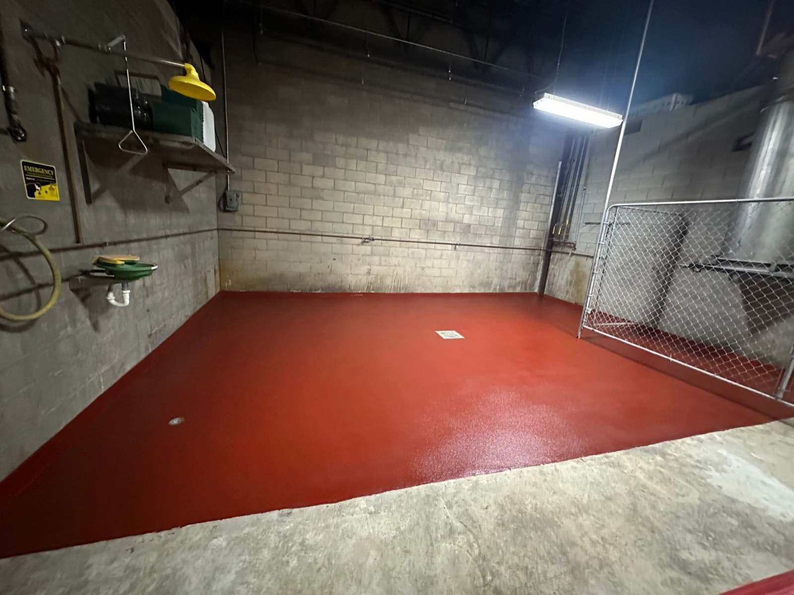
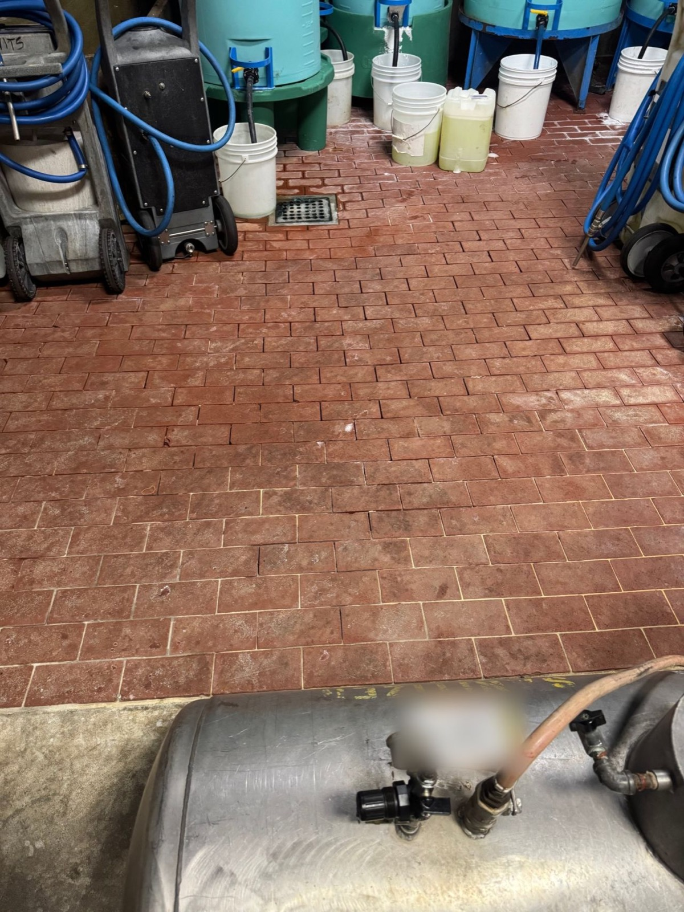
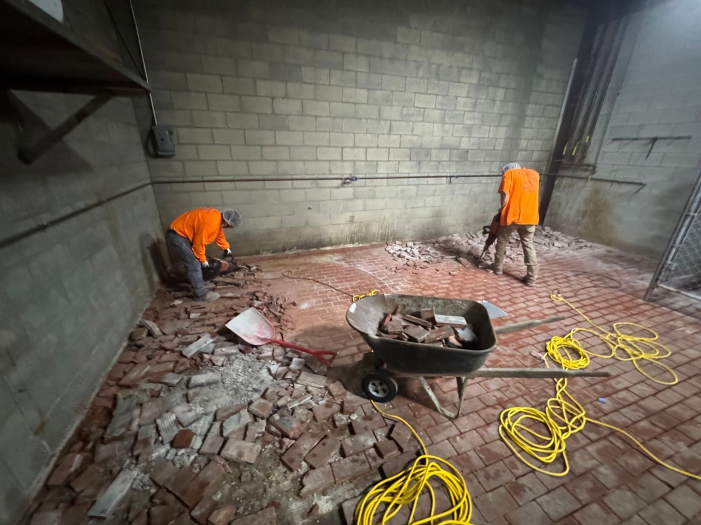
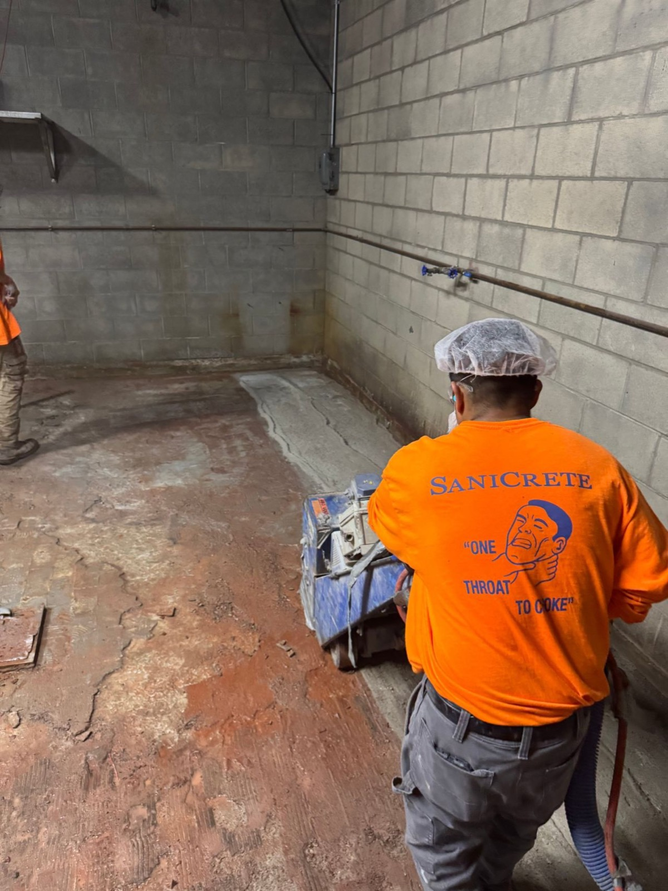
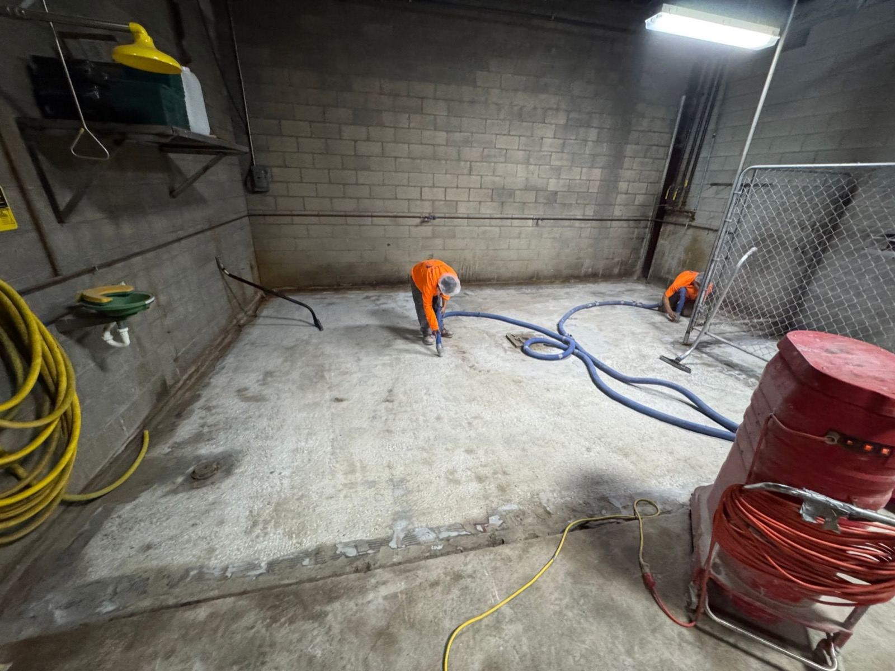
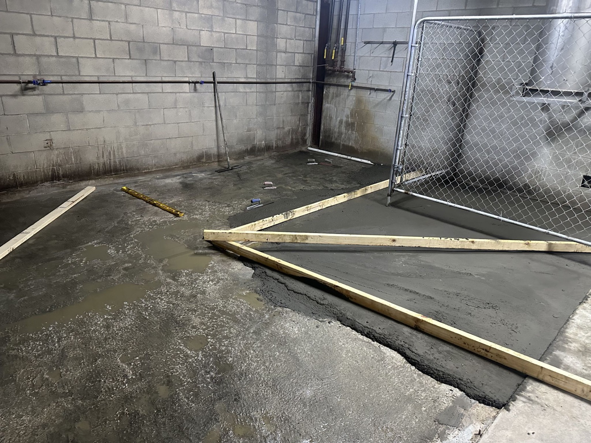

More plants are calling us about the same problem: old brick floors that can no longer be kept clean. The brick may still look solid, but the grout joints tell the real story. Sanitizers, acids, hot water, and daily cleaning break those joints down until they hold moisture and residue.
This chemical room had reached that point. Covering the surface would have left the failed joints and everything below them in place. The fix had to start with removing the old floor and rebuilding the room from a sound concrete base.

When the Joints Become the Problem
Brick is durable, but a brick floor is only as cleanable as the joints between each piece. When grout starts to erode, water can move below the surface. That creates places a sanitation crew cannot reach with a hose, scrubber, or chemical program. In a chemical storage room, the exposure can make that deterioration happen even faster.
The before photo shows the problem clearly. The room had brick surrounding a floor drain, along with tanks, buckets, hoses, and cleaning equipment. It was a working space, not a showroom. The replacement had to improve cleanability and drainage without creating another layer over the same underlying failure.

Remove the Failure, Then Prepare the Slab
Our crew tore out the brick and the setting bed below it. That matters because a new floor cannot perform any better than the material it is bonded to. Leaving loose mortar, contaminated material, or a weak setting bed behind would only transfer the old problem into the new system.


After removal, the slab was scarified to create the profile needed for a strong mechanical bond. The crew then cleaned the exposed concrete so dust and debris would not interfere with the next steps. Good preparation is not the part most people notice in the finished room, but it is what gives the finished system a dependable base.

Put the Water Back on a Path
Once the slab was ready, the crew re-sloped it so water would run to the drain instead of sitting in low spots. Slope is part of the floor system. A seamless surface is easier to clean, but it still needs to move wash water where it belongs.

We finished the room with SaniCrete STX urethane cement and a SaniCoat chemical-resistant topcoat. The result is one continuous floor with no grout lines to rework, no hidden joints below the surface, and a finish that is much easier for the plant to clean and inspect.